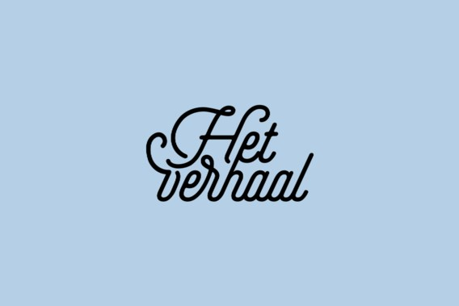

Kerekewere
Dit is de website voor de podcast over zelfdoding Kerekewere. Gemaakt door Brecht Castel in samenwerking met
De Standaard Audio
. De podcast zal vijf-delig zijn en elke zaterdag in Januari 2020 online komen.
Prelude
Als prelude en in afwachting van de podcast kan je luisteren naar
Verder na zelfdoding. 'Het schuldgevoel maakt het zoveel lastiger'

Your browser does not support the audio element.
Countdown
{% include countdown.html %}
Tux zegt "dag!" uit een ver verleden
Muziek
De muziek bij de podcast wordt/werd geproduced door
Brecht Plasschaert
in samenwerking met Stijn en Dieter Castel.